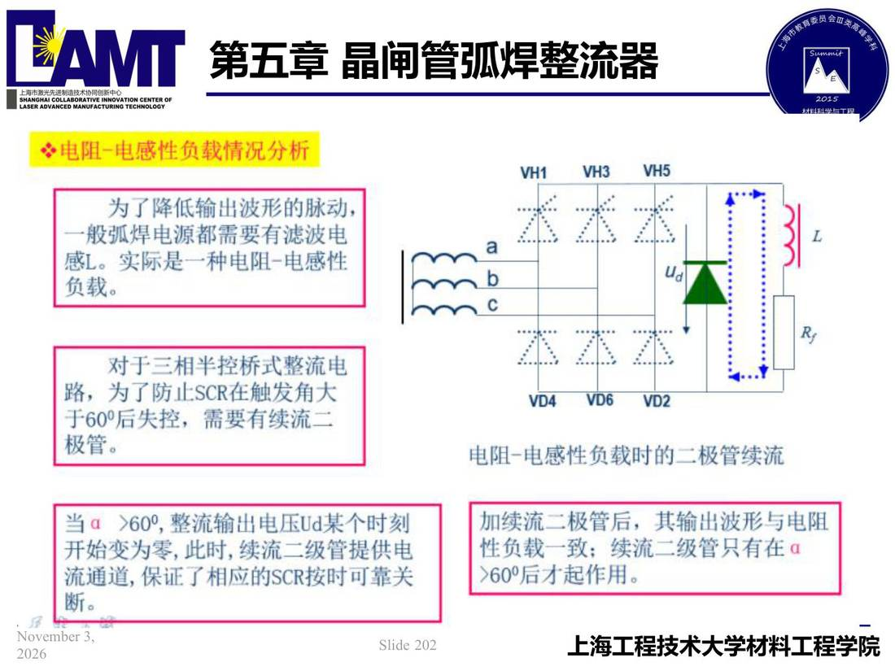

05 第5章 晶闸管弧焊整流器/p202 电阻-电感性负载情況分析
p202 电阻-电感性负载情況分析
📄 原文：📄 弧焊电源 课件（PDF 第 202 页）（幻灯片 202/273；PDF 第 202 页）
电阻-电感性负载情況分析

讲义原文
本页在课件中是纯图文版式（无文字层），内容以页图与下面的 OCR 文本为准。
页面文字（OCR 机读，可能有错字，以页图为准）
※电阻-电感性负载情況分析 为了降低输出波形的脉动， 一般弧焊电源都需要有滤波电 感L。实际是一种电阻-电感性 负载。 料料当与 对于三相半控桥式整流电 路，为了防止SCR在触发角大 于60°后失控，需要有续流二 极管。 当α>600，整流输出电压Ud某个时刻 开始变为零，此时，续流二级管提供电 流通道，保证了相应的SCR按时可靠关 电阻-电感性负载时二极管续流
关联
- ← p201 · 本章索引 · p203 →
- 同组：5.2三相可控整流主电路 · 全章：晶闸管整流器
- 概念卡：三相半波可控整流电路